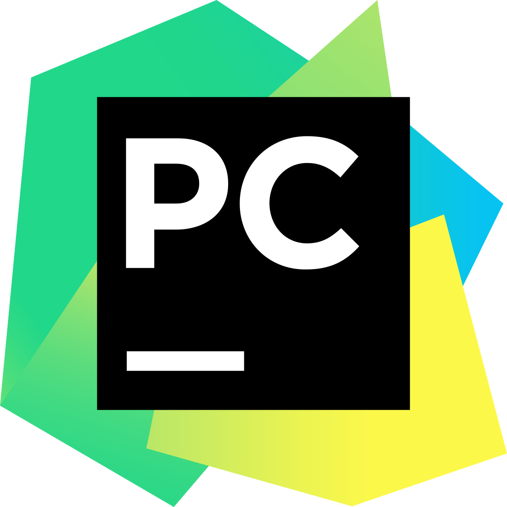

PhpStorm

Платформы:
Windows/Linux/macOS
Поддерживаемые языки:
PHP, JavaScript, HTML, CSS, SASS, LESS и т.д.
Стоимость:
от 199$ в год.
Умная среда от известной компании JetBrains предназначена для разработки на PHP, JavaScript, HTML и CSS и идеально подходит для работы с различными CMS:
Drupal, Wordpress, Symfony, Joomla и многими другими. Среда разработки глубоко анализирует структуру кода, помогая избегать ошибок, а также поддерживает базы данных и SQL.
Преимущества:
- Автодополнение кода и качественная отладка.
- Удобная навигация.
- Безопасный рефакторинг – применить изменения во всем проекте можно за пару кликов.
- Функция Live Edit позволяет мгновенно посмотреть все изменения в браузере.
- Интерфейс будет понятен даже новичкам.
Недостатки:
- Нет бесплатной версии. Но можно скачать триал.
Clion

Платформы:
Windows/Linux/macOS
Поддерживаемые языки:
С++, C, Objective C, Kotlin, Python, Swift, Fortran, JavaScript, CSS и другие.
Стоимость:
от 199$ в год
И снова продукт JetBrains. CLion – идеальное кроссплатформенное решение для тех, кто работает на C и C++ (и не только).
Умный редактор, удобный генератор кода, статический и динамический анализ, безопасный рефакторинг… Особенности данной среды разработки можно перечислять бесконечно.
Преимущества:
- Поддержка удаленной разработки по SSH.
- Просмотр значений переменных прямо в редакторе.
- Умная помощь при написании кода.
- Возможность кастомизировать редактор.
- Быстрый и безопасный рефакторинг.
- Широкий функционал. IDE можно использовать даже для программирования микроконтроллеров.
Недостатки:
- Нет бесплатной версии. Но, как и в случае с PhpStorm, можно скачать пробную версию.
Visual Studio
Платформы:
Windows/macOS(для Linux есть только редактор кода)
Поддерживаемые языки:
Ajax, ASP.NET, DHTML, ASP.NET, JavaScript, Visual Basic, Visual C#, Visual C++, Visual F#, XAML и другие.
Стоимость:
от 45$ в месяц.
Есть бесплатная версия (Community) для частного использования, студентов и создателей опенсорсовых проектов. Microsoft Visual Studio – это премиум IDE, стоимость которой зависит от редакции и типа подписки. Она позволяет создавать самые разные проекты, начиная с мобильных и веб-приложений и заканчивая видеоиграми. Microsoft Visual Studio включает в себя множество инструментов для тестирования совместимости – вы сможете проверить свое приложение на более чем 300 устройствах и браузерах.
Благодаря своей гибкости, эта IDE отлично подойдет как для студентов, так и для профессионалов.
Преимущества:
- Огромная коллекция всевозможных расширений, которая постоянно пополняется.
- Технология автодополнения IntelliSense.
- Возможность кастомизировать рабочую панель.
- Поддержка разделенного экрана (split screen).
Недостатки:
- Тяжеловесность этой IDE
PyCharm

Платформы:
Windows/Linux/macOS
Поддерживаемые языки:
Python, Jython, Cython, IronPython, PyPy, AngularJS, Coffee Script, HTML/CSS, Django/Jinja2 templates, Gql, LESS/SASS/SCSS/HAML, Mako, Puppet, RegExp, Rest, SQL, XML, YAML и т.д.
Стоимость:
от 199$ в год
Есть бесплатная версия, но она работает только с Python. Это интегрированная среда разработки на языке Python, которая была разработана международной компанией JetBrains (да, и снова эти ребята).
Эта IDE распространяется под несколькими лицензиями, в том числе как Community Edition, где чуть урезан функционал.
Преимущества:
- Поддержка Google App Engine; IronPython, Jython, Cython, PyPy wxPython, PyQt, PyGTK и др.
- Поддержка Flask-фреймворка и языков Mako и Jinja2.
- Редактор Javascript, Coffescript, HTML/CSS, SASS, LESS, HAML.
- Интеграция с системами контроля версий (VCS).
- UML диаграммы классов, диаграммы моделей Django и Google App Engine.
Недостатки:
- Иногда встречаются баги, которые, как правило, не вызывают сильных неудобств.
IntelliJ IDEA

Платформы:
Windows/Linux/macOS
Поддерживаемые языки:
Java, AngularJS, Scala, Groovy, AspectJ, CoffeeScript, HTML, Kotlin, JavaScript, LESS, Node JS, PHP, Python, Ruby, Sass,TypeScript, SQL и другие.
Стоимость:
от 499$ в год.
Бесплатная версия работает только с Java и Android. Еще одна IDE, разработанная компанией Jet Brains. Здесь тоже есть возможность использовать бесплатную версию Community Edition, а у платной версии есть тестовый 30-дневный период. Изначально IntelliJ IDEA создавалась как среда разработки для Java, но сейчас разработчики определяют эту IDE как «самую умную и удобную среду разработки для Java, включающую поддержку всех последних технологий и фреймворков».
Преимущества:
- Инструменты для анализа качества кода, удобная навигация, расширенные рефакторинги и форматирование для Java, Groovy, Scala, HTML, CSS, JavaScript, CoffeeScript, ActionScript, LESS, XML и многих других языков.
- Интеграция с серверами приложений, включая Tomcat, TomEE, GlassFish, JBoss, WebLogic, WebSphere, Geronimo, Resin, Jetty и Virgo.
- Инструменты для работы с базами данных и SQL файлами.
- Инструменты для запуска тестов и анализа покрытия кода, включая поддержку всех популярных фреймворков для тестирования.
Недостатки:
- Инструменты для запуска тестов и анализа покрытия кода, включая поддержку всех популярных фреймворков для тестирования.
Eclipse

Платформы:
Windows/Linux/macOS
Поддерживаемые языки:
C, C++, Java, Perl, PHP, Python, Ruby и другие.
Стоимость:
Бесплатно.
Это бесплатная опенсорсная среда разработки, которая хорошо подойдет как новичкам, так и опытным разработчикам. Помимо инструментов отладки и поддержки Git/CVS, Eclipse поставляется с Java и инструментом для создания плагинов. Изначально Eclipse использовалась только для Java, но сейчас, благодаря плагинам и расширениям, ее функции значительно расширились. Именно из-за возможности расширить Eclipse своими модулями эта платформа и завоевала свою популярность среди разработчиков.
Функционал Eclipse не такой большой, как у IntelliJ IDEA, зато эта среда разработки распространяется с открытым исходным кодом.
Преимущества:
- Возможность программировать на множестве языков.
- Значительная гибкость среды за счет модульности.
- Возможность интеграции JUnit.
- Удаленная отладка (при использовании JVM).
Недостатки:
- Новичкам может быть сложно разобраться в многообразии возможностей.
NetBeans

Платформы:
Windows/Linux/macOS/BSD
Поддерживаемые языки:
C, C++, C++ 11, Fortan, HTML 5, Java, PHP и другие.
Стоимость:
Бесплатно.
Это бесплатная опенсорсная IDE. Прекрасно подойдет как для работы с уже имеющимися проектами, так и для создания нового.
Это одна из лучших IDE для разработки Java-приложений, в которую можно установить пакеты, обеспечивающие и поддержку других языков.
Преимущества:
- Интуитивно понятный интерфейс drag-and-drop.
- Динамические и статические библиотеки.
- Возможность удаленной разработки.
- Совместима с Windows, Linux, macOS и Solaris.
- Поддержка Qt.
- Поддерживает различные компиляторы, в том числе CLang/LLVM, Cygwin, GNU, MinGW и Oracle Solaris Studio.
Недостатки:
- NetBeans требуется много памяти, поэтому на некоторых машинах эта среда может подтормаживать.
Xcode

Платформы:
macOS
Поддерживаемые языки:
AppleScript, C, C++, Java, Objective-C, Swift.
Стоимость:
Бесплатно.
Функциональная среда для создания приложений под продукты Apple – iPhone, iPad, Mac, Apple TV и Apple Watch. В IDE могут работать как индивидуальные, так и корпоративные разработчики.
Чтобы разместить созданное приложение в App Store, необходимо купить лицензию разработчика.
Преимущества:
- Фирменный компилятор Apple.
- Создание прототипов без написания кода.
- Умный анализатор кода.
Недостатки:
- Работает только на Mac.
Code::Blocks

Платформы:
Windows/Linux/macOS
Поддерживаемые языки:
C, C++, Fortran
Стоимость:
Бесплатно.
Опенсорсная среда разработки – простая, нетребовательная к ресурсам и очень производительная. Поддерживает огромное количество компиляторов и отладчиков.
Расширить функционал можно с помощью бесплатных плагинов.
Преимущества:
- Удобная структура меню.
- Высокая производительность.
- Встроенная система быстрой сборки.
Недостатки:
- Не подойдет профессионалам.
- Много багов.
- Несколько устаревший интерфейс.
Komodo
Платформы:
Windows/Linux/macOS
Поддерживаемые языки:
CSS, JavaScript, HTML, NodeJS, Perl, PHP, Python, Ruby и другие.
Стоимость:
Бесплатно.
IDE Komodo поддерживает огромное множество языков программирования, что делает ее невероятно популярной для веб и мобильной разработки.
Кроме того, с недавних пор среда распространяется бесплатно.
Преимущества:
- Возможности удобной кастомизации.
- Поддерживает популярные системы контроля версий.
- Умная подсветка синтаксиса.
- Неплохой визуальный отладчик.
Недостатки:
- К бесплатной IDE с такими возможностями и не придерешься.